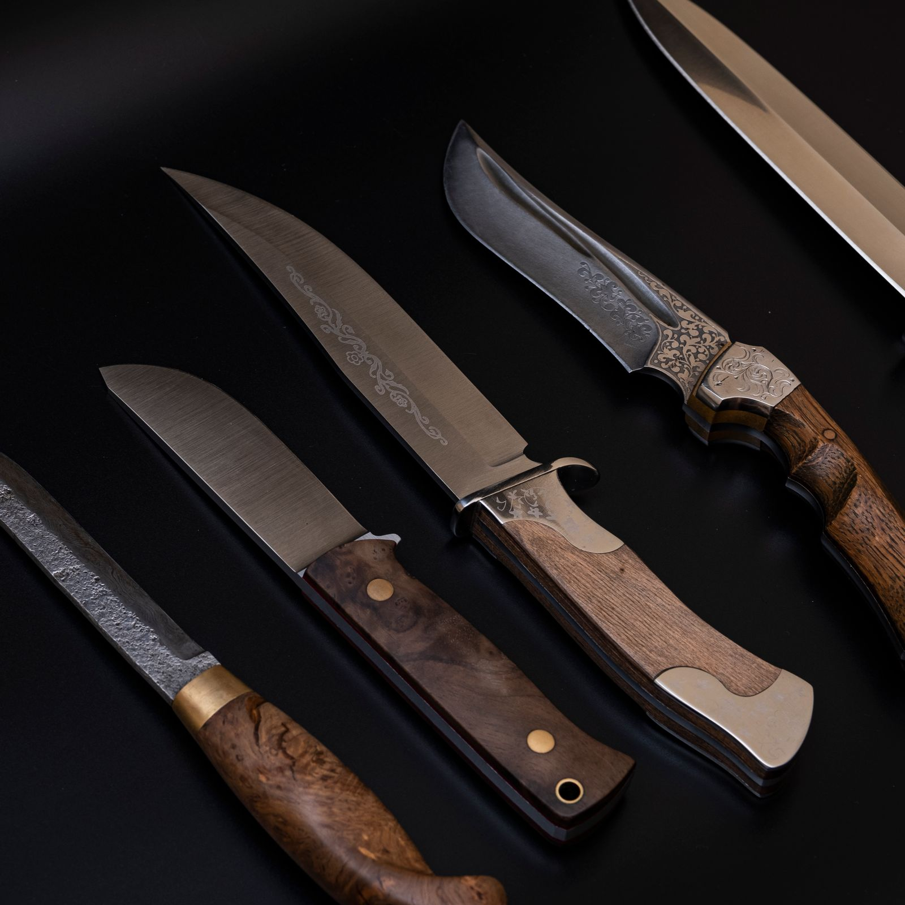

A working set for a 40-cover kitchen

The ask
A head chef in Cologne-Ehrenfeld was replacing a drawer of factory knives twice a year. Her words: “I want one set that is still working when my apprentices are chefs. And I want to know what is in it.” She asked for the steel, the hardness and the sharpening routine in writing — before she asked the price.
What I did
Six blades in 80CrV2 at 60 HRC: two 210 cook's knives, a 240 for the tall sous-chef, a petty, a serrated bread knife and a carving fork, all with matched bog-oak handles so any hand in the kitchen knows the grip blind. Delivered in two batches so the kitchen was never without a full set, each blade's Rockwell reading written on its invoice line.
The outcome
Fourteen months on: two re-hones at the forge, both free under the first-year arrangement, and no chipped edges — including the Friday a 210 went edge-first onto quarry tiles. The edge rolled instead of chipping, which is exactly what 60 HRC in 80CrV2 is chosen for, and it was back in service inside one service.
“Lukas wrote the hardness on the invoice. I thought it was theatre. Then my sous-chef dropped the 210 onto quarry tiles in the middle of a Friday service — the edge rolled, it did not chip, and it was back on the steel in four minutes. That is the whole review, really.”